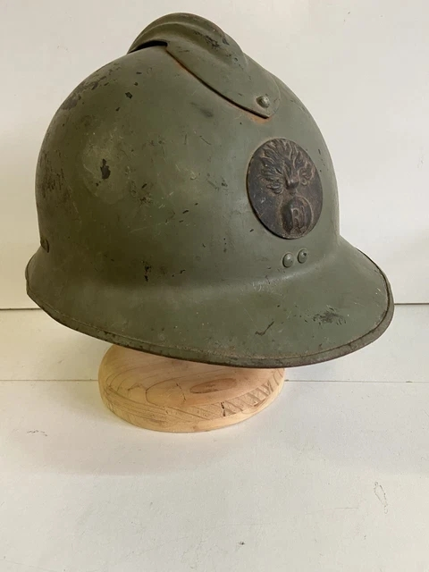
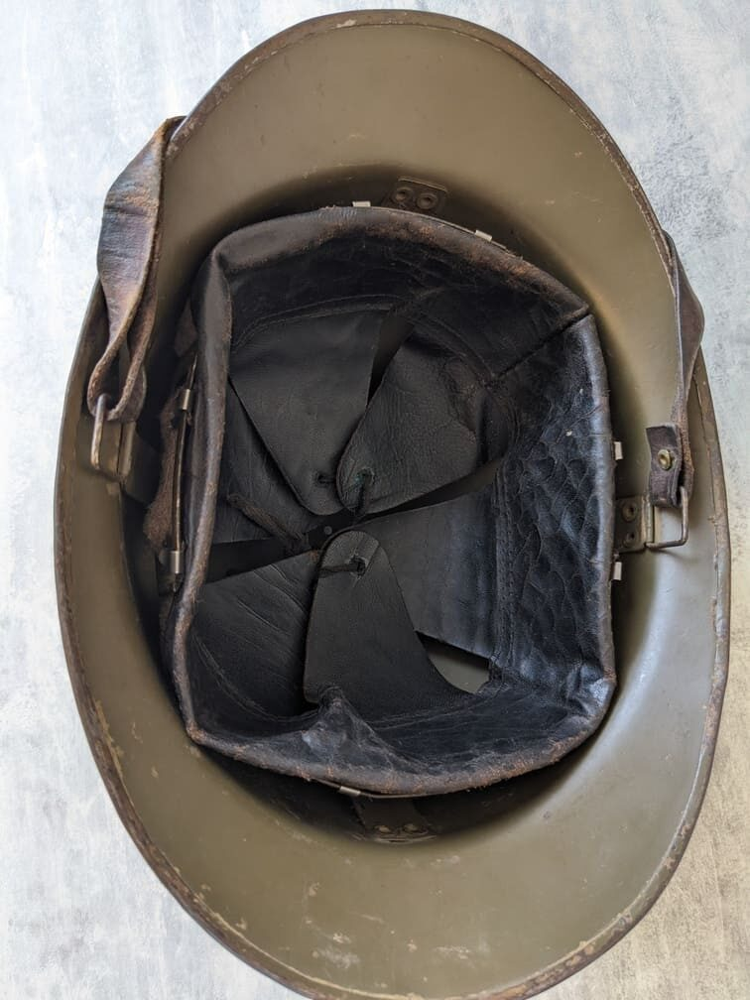

Pays : France
Modèle : M26
Période : 1926–1940
Fabricant : Japy, Dupeyron, Paris, etc.
Le casque Adrian M26 est une évolution du modèle M15, conçu pour offrir une meilleure protection et une fabrication plus robuste. Il conserve le célèbre cimier, mais adopte une bombe plus épaisse, une peinture kaki ou bleu selon les unités, et un insigne frontal simplifié.

L’intérieur du M26 se compose d’une coiffe en cuir montée sur une suspension en toile, offrant un meilleur confort que le modèle précédent. La jugulaire est en cuir brun, fixée par rivets latéraux.
Adopté en 1926, il équipe l’armée française durant toute l’entre-deux-guerres. En 1939–1940, il est porté par l’infanterie, l’artillerie, la gendarmerie, les troupes motorisées et les services auxiliaires. Il reste visible dans les combats de mai–juin 1940.
Points clés pour reconnaître un original :